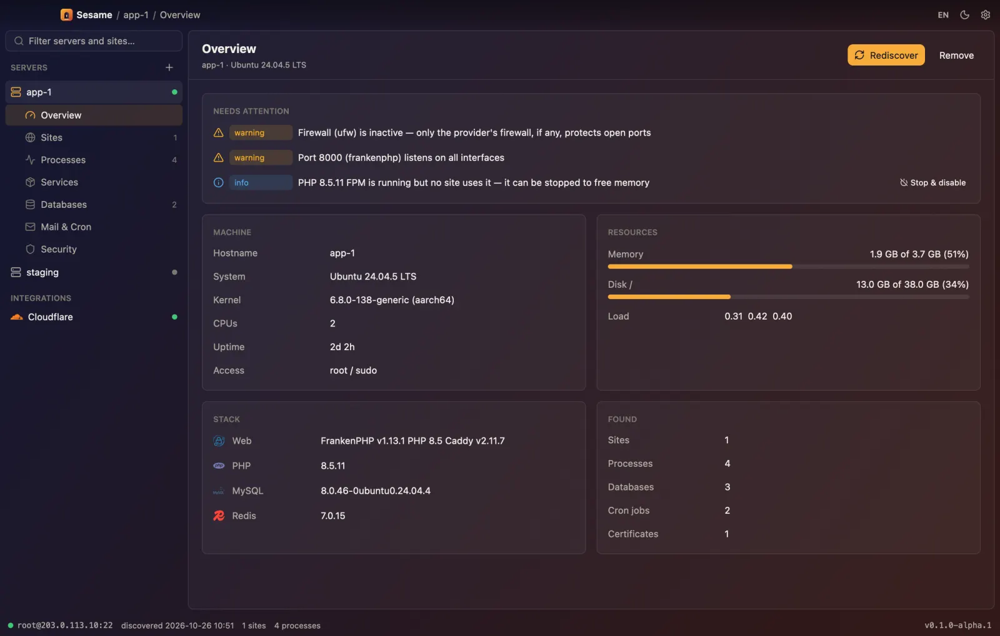
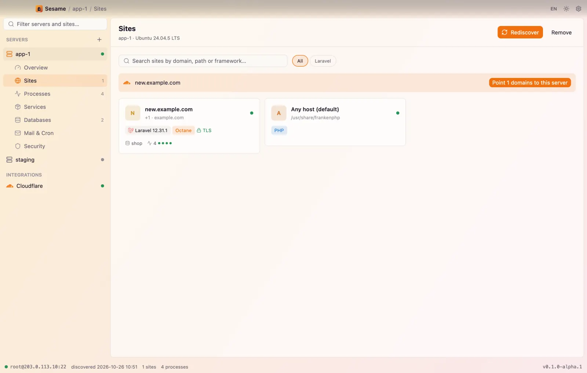
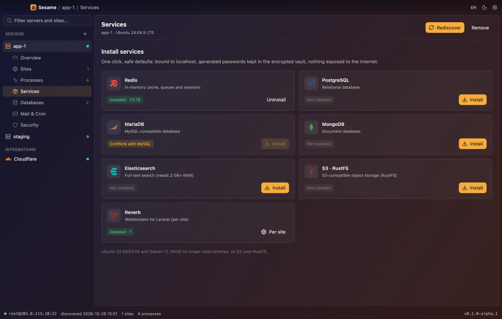
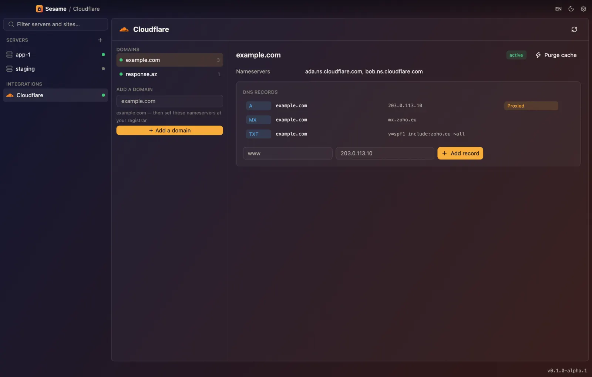
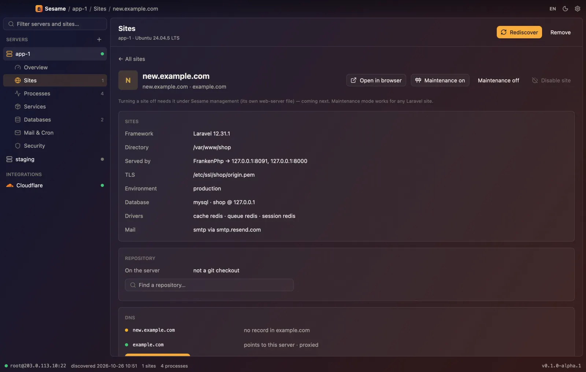

Open your servers.
A native server manager for Laravel. Give it SSH — it finds every site, database and process on the box, and runs them with you.
Free and open source. macOS today, Windows next. Nothing to install on your server.

From an SSH login to a calm picture in a minute.
Connect
Your ssh-agent, a key or a password. Host keys are checked against known_hosts. No agent, no daemon, no open port.
Discover
One read-only probe finds sites in Caddy, Nginx and Apache, Laravel apps, workers, databases, cron, certificates and the firewall.
Run
New isolated sites, one-click services, databases, deploys from GitHub and Cloudflare DNS — each change previewed first.
Every site in its own room.
Each new site gets its own Linux user, its own PHP-FPM pool or Octane process, its own database user and a Redis ACL limited to its keys. The web server reads public/ — never your .env.
- own user
- own pool
- own DB
- Redis ACL
- subdomains

Databases in one click. Nothing until you ask.
Redis, PostgreSQL, MariaDB, MongoDB, Elasticsearch, S3 on RustFS and Reverb. Bound to localhost, passwords generated and sealed in the vault. phpMyAdmin and pgAdmin open through an SSH tunnel, never in public.
- localhost only
- keep data on uninstall
- admin panels via tunnel

Push to GitHub. Point the domain. Done.
Link a site to a repository and branch: Sesame adds a read-only deploy key, fetches, installs, migrates and restarts workers. Cloudflare zones and records live next to the site, with a “point to this server” button.
- deploy keys
- migrations
- DNS records
- cache purge

When you need your hands on it.
A file manager jailed to one site over SFTP, with a small editor. A real terminal, xterm-256color, in the same window.
- SFTP jail
- editor
- PTY terminal

Let Claude run your servers. On your terms.
Sesame speaks MCP and REST. Agents read everything at once; every change pops up in the app, and nothing runs until you press Allow. Every step lands in the audit log with the agent's name.
# Claude Code
claude mcp add sesame -- sesame mcp
# Claude Desktop, Cursor
{ "mcpServers": { "sesame": {
"command": "sesame", "args": ["mcp"] } } }sesame api-token # shown once
sesame serve # 127.0.0.1:7878
curl -X POST localhost:7878/v1/tools/list_sites \
-H "Authorization: Bearer $TOKEN" \
-d '{"server":"prod"}'sesame add prod root@203.0.113.10
sesame discover prod
sesame do prod new-site shop.example.com \
--database postgres --redis --queue
sesame do prod install redisYour servers, your Mac, your keys.
Read-only first
Discovery never writes, and never reads passwords or keys from .env.
Encrypted vault
XChaCha20-Poly1305 under a key from your master password via Argon2id.
Confirm, then run
Plans list their steps. Drops back up first and ask you to type the name.
Off the command line
Secrets travel over stdin — never in argv, never in ps.
Signed updates
Releases are verified with ed25519 before they replace the app.
Free where it runs on your machine.
Self-hosted
$0forever
- Unlimited servers and sites
- MCP and REST for agents
- Cloudflare and GitHub
- Apache-2.0, fork it
Sesame Cloud
Laterfor teams
- Servers shared with your team
- Web and mobile dashboards
- Roles, approvals and audit in one place
- Alerts and scheduled backups
The desktop app stays free and open source. Cloud will pay for the hosting, not for the features you already have.
Questions
How is this different from Forge or Ploi?
They are web dashboards that keep access to your servers. Sesame is an app on your Mac that talks plain SSH, so your keys stay with you and it can adopt a server you set up by hand.
And from Coolify?
Coolify runs on the server and builds containers. Sesame installs nothing on the server and manages the classic Laravel stack: Caddy or Nginx, PHP-FPM or Octane, supervisor, system databases.
What does it change on my server?
Nothing during discovery. Everything else is a plan you see first — with destructive steps asking you to type the name, and a backup before any drop.
Where are my passwords?
In an encrypted vault on your Mac, unlocked with your master password or a key file. Never in the plain database, never in logs.
Which servers are supported?
Ubuntu 22.04/24.04 and Debian 12, amd64 and arm64. Discovery works on most Linux servers.
Open your servers.
Try the alpha on a test server first — and tell us what it found.
Download Sesame